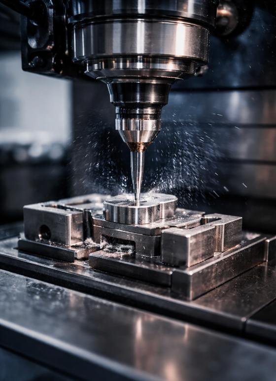
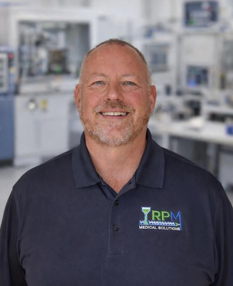
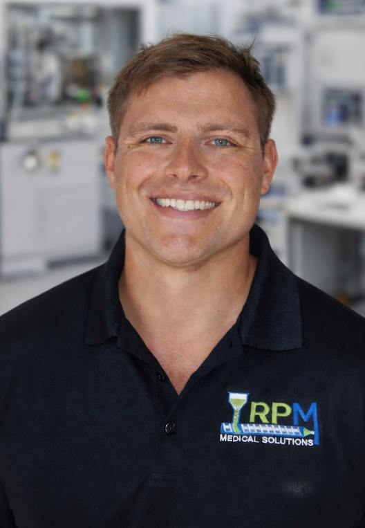
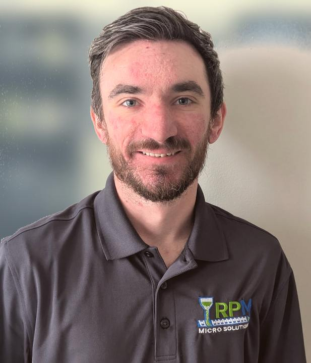
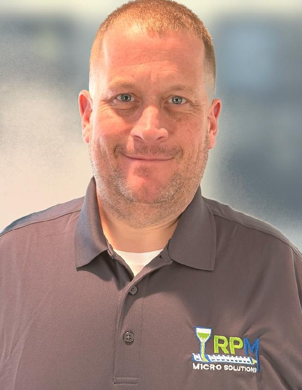
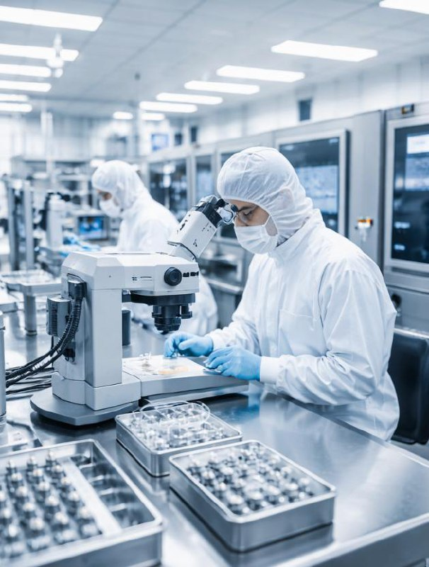

ABOUT RPM MICRO SOLUTIONS
70+ years of precision micro molding expertise serving medical device OEMs
70+ years of precision micro molding expertise serving medical device OEMs
RPM Micro Solutions is a precision micro-molding platform serving medical device OEMs in this high-barrier MedTech niche. Led by industry veterans with 70+ years of combined experience, we combine advanced manufacturing technology with proven expertise to deliver components that meet the strictest tolerances and quality requirements.
Deep expertise in precision manufacturing, medical device development, and business leadership.

Sub-micron manufacturing capabilities for the world's most demanding applications.
RPM Micro Solutions is launched and led by micromolding industry veterans with deep expertise and a proven track record in precision medical device manufacturing.

Gary is a seasoned manufacturing executive with over 40 years of experience in precision tooling and medical micromolding. In his previous role, he built a leading micro molding company around the emerging demand for miniaturized medical devices, advancing through senior leadership roles to become CEO.
Under Gary's leadership, his previous company expanded its facility footprint, achieved FDA registration for medical device manufacturing, and grew revenue by more than 40% while maintaining over $3 million in adjusted EBITDA. His track record of scaling highly regulated manufacturing operations and driving profitability forms the operational backbone of RPM Medical Solutions.

Zachary brings a unique combination of hands-on manufacturing experience and engineering expertise to RPM. Starting in the micro molding industry in 2013, he progressed from shop floor operations through CNC machining, mold design, and precision tooling while earning his Mechanical Engineering degree from the University of New Hampshire.
His disciplined leadership experience from the U.S. Army National Guard, where he commissioned as an officer through ROTC in 2021, combined with deep technical knowledge of regulated manufacturing environments, positions him to drive operational excellence and scalable execution at RPM Medical Solutions.
Kyle brings extensive hands-on expertise in precision tooling and micro molding manufacturing to RPM. With deep experience in CNC machining, mold design, and tool room operations, he ensures that every component meets the exacting standards required for medical device applications.
His leadership in the tool room and commitment to precision manufacturing excellence makes him integral to RPM's ability to deliver complex micro-molded components with consistent quality and tight tolerances. Kyle's expertise spans the full tooling lifecycle from initial design through production optimization.

Patrick holds a degree from Penn State University in Plastics Engineering and Polymer Science, bringing deep expertise in advanced polymer processing and injection molding science. Early in his career, he contributed to multi-industry consulting projects across defense, aerospace, and medical sectors, including custom polymerization programs for the U.S. Navy and R&D work with Husky Injection Molding.
With extensive experience in micro molding science, complex melt-flow behavior, and specialized mold construction methodologies, Patrick brings proven expertise in medical device manufacturing. His ability to translate complex polymer science into manufacturable, scalable medical device solutions makes him a strategic technical asset to RPM Medical Solutions.

Jared brings extensive operational leadership and manufacturing expertise to RPM Medical Solutions. With deep experience in production planning, quality management, and process optimization, he ensures seamless execution across all manufacturing operations while maintaining the highest standards required for medical device production.
His hands-on approach to operational excellence and commitment to continuous improvement makes him integral to RPM's ability to deliver consistent, high-quality micro-molded components on time and to specification. Jared's leadership ensures operational efficiency while maintaining strict compliance with medical device manufacturing requirements.
To be the premier precision micro-molding partner for medical device OEMs, delivering innovative solutions that enable breakthrough medical technologies while maintaining the highest standards of quality, compliance, and customer service.

Strategically positioned in the heart of New England's advanced manufacturing corridor, providing easy access to major medical device and biotech companies throughout the region.
Our team is ready to collaborate with you on your next precision micro molding challenge.